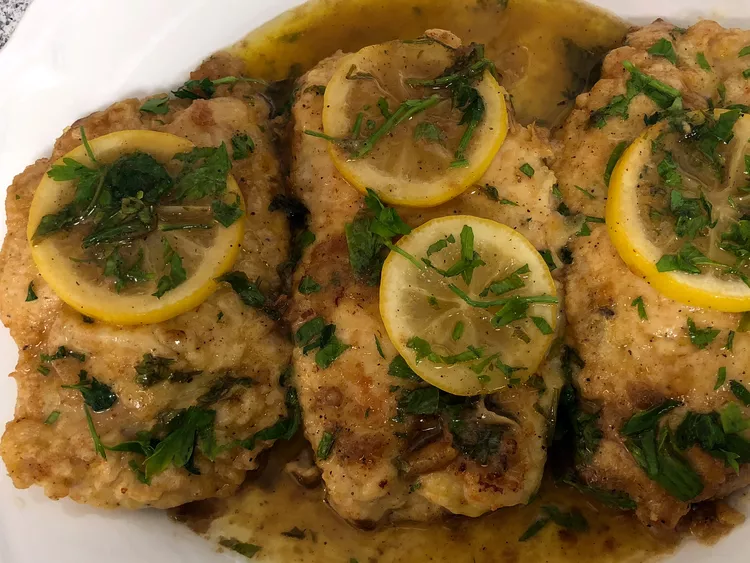

Home
Famous Chicken Francaise

Description
This lemony chicken dinner is deceptively simple. While it sounds (and tastes) complex, it's really just a chicken cutlet in an egg batter with a lemon-butter sauce.
Ingredients
- 1 large egg, beaten
- 1 ½ medium lemons, juiced, divided
- 1 cup all-purpose flour
- 1 pinch garlic powder
- 1 pinch paprika
- 6 skinless, boneless chicken breast halves
- 2 tablespoons butter
- 1 (14.5 ounce) can chicken broth
- 6 slices lemon, for garnish
- 2 sprigs fresh parsley, for garnish
Steps
- Gather all ingredients.
- Mix together egg and 1/3 of the lemon juice in a shallow dish or bowl. Mix together flour, garlic powder, and paprika in another shallow dish or bowl. Dip chicken breasts in egg mixture, then flour mixture to coat.
- Heat butter in a large skillet over medium heat. Add chicken breasts and cook until golden, 2 to 3 minutes per side.
- Mix together broth and remaining lemon juice in a medium bowl; pour over chicken in the skillet. Reduce heat to medium-low and let simmer until an instant-read thermometer inserted into the center reads at least 165 degrees F (74 degrees C), about 8 minutes.
- Place chicken on a serving platter. Cover with lemon sauce and garnish with fresh lemon slices and parsley sprigs.